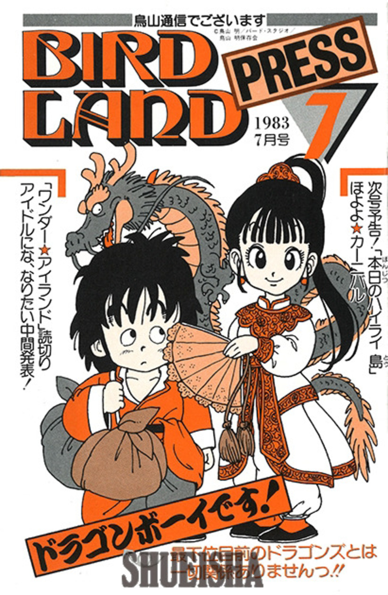

Dragon ball
A história de Dragon Ball começa com Son Goku, um garoto ingênuo e puro com cauda de macaco e uma força extraordinária. Ele mora sozinho após a morte de seu avô adotivo em uma montanha chamada Paozu. Um dia ele conhece Bulma, uma garota muito inteligente da cidade, que estava em busca das sete Esferas do Dragão. Persuadido, Goku concorda em ajudar Bulma a encontrar as Esferas. Os dois partem em uma longa jornada, durante a qual eles fazem muitos amigos. Depois, Goku passa por um treinamento com Kame-Sennin, onde o garoto Kuririn se torna seu parceiro, e participa de vários torneios mundiais de artes marciais. No curso de seu crescimento e seu desenvolvimento, ele enfrenta inúmeros inimigos, incluindo Piccolo,[2] que depois se torna seu aliado. Quando jovem adulto, Goku se casa com Chi-Chi, cumprindo uma promessa feita por ele quando ambos eram crianças, e possui seu primeiro filho chamado Gohan. Goku acaba descobrindo que pertence à raça extraterrestre Saiyajin, e que foi enviado à Terra quando criança para conquistar o planeta. Pouco depois de sua chegada, no entanto, ele tinha sofrido um ferimento na cabeça, perdendo desta forma a memória da missão e sua natureza agressiva. No entanto, o jovem decide continuar a defender seu planeta adotado do ataque de inimigos cada vez mais difíceis, incluindo o príncipe dos sayajins Vegeta, que depois também se torna seu aliado.[6] Desta forma, juntamente com sua família e seus amigos, Goku luta contra inimigos como Freeza, Cell, Boo, entre outros, se tornando o protetor da Terra e todo o universo.
O manga
O mangá Dragon Ball foi adaptado em duas séries de anime pela Toei Animation: Dragon Ball e Dragon Ball Z, que, juntas, foram transmitidas no Japão de 1986 a 1996. Além disso, o estúdio desenvolveu 20 longas-metragens animadas e três especiais de televisão, assim como duas séries de anime, intituladas Dragon Ball GT (1996–1997) e Dragon Ball Super (2015–2018). De 2009 a 2015, uma versão remake e acelerada de Dragon Ball Z foi exibida no Japão sob o título Dragon Ball Kai, na qual a maior parte das cenas da versão original que não aparecem no mangá foram removidas. Várias empresas desenvolveram diversas adaptações da série de mangá, tornando-a uma grande e popular franquia de mídia que inclui filmes animados e em live-action, jogos de cartas colecionáveis, inúmeras figuras de ação, além de várias coleções de trilhas sonoras e um grande número de jogos eletrônicos. A partir de novembro de 2014, a franquia gerou $5 bilhões em mercadorias,[1] tornando Dragon Ball uma das franquias de mídia baseadas em mangá mais co mercializadas de todos os tempos.

Zeus era o deus supremo da mitologia grega, conhecido como governador do Universo. Lutou contra o próprio pai, Cronos, e resgatou seus irmãos da morte.
Goku
Son Goku começa a série como uma criança independente da sociedade, forte e destemida. Graças ao seu sangue Saiyajin, ele era mais poderoso que a maioria dos inimigos que enfrentava, ficando ainda mais forte à medida que lutava. Mesmo assim, por causa dos seus mestres Son Gohan e Kame, sempre foi gentil com os outros, chegando ao ponto de tentar não matar nenhum inimigo. É mostrado em Dragon Ball que Son Goku não tem maldade no coração, isto é, o que ele tem de força, possui também em inocência. Quando adulto, em Dragon Ball Z, Son Goku torna-se muito mais poderoso do que antes; ao longo do anime, seu poder alcança dimensões descomunais. Sua maior paixão, sem dúvida, é lutar. Ao longo da série, Goku demonstra muita satisfação por lutar contra inimigos mais poderosos do que ele. É possível concluir que ele é, na maior parte das vezes, quem alcança o poder mais elevado na história. Contudo, e apesar da sua significativa dedicação em árduos treinos, existe sempre alguém mais forte que ele, o que o leva a treinar ainda mais. Goku causa admiração em seus amigos e colegas de luta. A sua personalidade única e seu potencial de ser o mais forte do Universo fazem com que todos os Guerreiros Z o vejam como uma meta a ser atingida.
Dragon Boy
Goku foi baseado em Tanton, o protagonista da série Dragon Boy e um dos primeiros personagens de Toriyama (nessa história, a principal característica física de Tanton era um par de asas). Quando Akira decidiu criar Dragon Ball, ele usou o romance Jornada ao Oeste, de Wu Cheng'en, como inspiração. O nome adotado por Toriyama para o personagem é a escrita japonesa do nome chinês Sun Wukong, que é a personagem central da história.
Shenlong
A principal inspiração para os traços do novo Bugdroid veio daqueles bonequinhos que ilustram portas de banheiro para indicar o gênero de cada porta. Conta a lenda que a artista estava criando em sua mesa no escritório do Google e olhou para o lado dos banheiros e a identificação foi imediata: simples, limpo, objetivo.
Então é isso! Espero que você tenha gostado do nosso artigo com essa curiosidade sobre o sistema Android e seu simpático mascote.